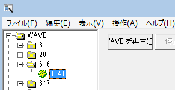

効果音
天翔記内に元々ある効果音、及び、ユーザー独自の効果音を再生するAPIです。
相場の値を変更したい場合には、以下の
相場変更直前に実行されるイベントハンドラの
On_相場変更直前 を利用してください。
再生ファイルの種類
効果音に関する関数が、大幅に強化し、関数数も増えた。
音のタイプとして大きく３種類、
・通常のwavファイル
・通常のmp3ファイル
・通常のminiファイル
・dllに埋め込んだ通常のwavリソース
の４種類が利用可能である。
音ハンドル型 効果音再生(string 音源ファイル名, BOOL ループ = 効果音ループ::ＯＦＦ)
あるいは、
などというように、ファイル名を指定することで、効果音の単発再生が可能である。
音ハンドル型 効果音再生( int 効果音音源, string 効果音ＤＬＬ名, BOOL ループ )
といった形で、天翔記に存在する音源の再生も可能となっている。
どのような音源があるのかは、「効果音情報列挙.h」を参照のこと。
Visual Studio 上で 「効果音再生(効果音音源::」と入力すれば自然と候補が出てくるかと思います。
「""」は音声リソースが埋め込まれているＤＬＬ名を指定する。
音のループ
音をループも可能です。
音ハンドル型 mysnd1; // グローバル変数やクラスフィールドなど
// ・・・
mysnd1 = 効果音再生("mysnd/e.mp3", 効果音ループ::ＯＮ);
というように、再生時に、返り値を「音ハンドル型」の変数にとっておいて、
別の場所にて、
とすれば、止まる。
例を追記すると、
音ハンドル型 hMySnd = NULL;
string カスタム::On_噴出メッセージ直前(string 武将名, string 元メッセージ, メッセージ関連情報型 メッセージ関連情報) {
if ( 武将名=="真田幸隆" ) {
if ( !hMySnd ) {
hMySnd = 効果音再生( "d.mp3", 効果音ループ::ＯＮ );
} else {
効果音停止( hMySnd );
hMySnd = NULL;
}
}
return "";
}
などとすればよい。
試しに、「真田幸隆」に会見でもすれば音が鳴りはじめ、
再び会見すれば、音が停止するであろう。
効果音同時再生数
効果音は同時に最大で「８つ」まで再生される。
同時に９つ目が再生されそうになると、９つ目は無視される。
常識的に考えても、効果音が８つも鳴っていたら、かなりうるさいと言えよう。
３Ｄ空間音
音ハンドル型 ３Ｄ効果音再生(string 音源ファイル名, BOOL ループ = 効果音ループ::ＯＦＦ, ３Ｄ位置型 位置, ３Ｄベクトル型 移動／毎秒);
３Ｄ空間で音を再生することが可能である。
string カスタム::On_噴出メッセージ直前(string 武将名, string 元メッセージ, メッセージ関連情報型 メッセージ関連情報) {
if ( 武将名=="真田幸隆" ) {
３Ｄ効果音再生( 効果音音源::台風, "", 効果音ループ::ＯＦＦ, ３Ｄ位置型(5,0,0), ３Ｄベクトル型(-2,0,0) );
}
return "";
}
などとすると、音が右から左へと、移動してゆく。
逆に、
string カスタム::On_噴出メッセージ直前(string 武将名, string 元メッセージ, メッセージ関連情報型 メッセージ関連情報) {
if ( 武将名=="真田幸隆" ) {
３Ｄ効果音再生( 効果音音源::台風, "", 効果音ループ::ＯＦＦ, ３Ｄ位置型(-5,0,0), ３Ｄベクトル型(2,0,0) );
}
return "";
}
などとすると、音が左から右へと、移動してゆく。
３Ｄ位置型にて、「音の再生される位置」を指定し、「３Ｄベクトル型」にて、１秒あたり、どの方向へと音源が移動するのかを指定する。
３Ｄ空間のデカルトと方向
３Ｄ位置型(x, y, z) や ３Ｄベクトル型(x,y,z)の座標軸は以下の通りである。
仮想空間で人間がＺ方向に顔を向けている
と想定されている。
３Ｄ位置型(-5,0,0)
ということは、人間の５ｍ左で音を再生する考えれば良い。
又、
３Ｄベクトル型(2,0,0)
というのは、
その音が「１秒あたり２ｍのスピード」でX軸右方向へと動くということだ。
このように、空間にて移動する音を再生することが可能である。
2chスピーカーやヘッドフォンでも充分体感できるが、5.1chのスピーカーであれば、一層臨場感が増すだろう。

全ての効果音の一斉停止
全ての効果音停止()
最後に、ScenarioModから再生した全ての音を強制的に停止する手段として、
という関数が利用可能である。
Midiの再生
MIDIフォーマットも再生可能です。
効果音再生("mydir/a.mid", 効果音ループ::ＯＮ);
Midiには特殊な概念として、「Midiシンセサイザー」という概念がある。
Midiとは言わば、「楽器やテンポ、効果が指定された楽譜」に過ぎない。
実際にどのような演奏がされるのかは、シンセサイザーの音源によって決まる。
通常それは、「Midiマッパー/ドライバー」という形によって、提供される。
SceanrioModでは、この「どのシンセサイザーを利用するのか」を、下記のように「部分文字列」で適当な感じで指定可能である。
// "TiMidi" という文字列が含まれるMidiマッパーデバイス(シンセサイザー)が、Windowsにインストールされているならば、そちらで再生する。
Set_ＭＩＤＩデバイス("TiMidi");
これは、ゲーム開始時に設定するだけではなく、途中で何度でも切替可能である。
MIDIは３Ｄ効果音再生には対応していない。
独自音源のwaveなどを１つのdllにパックする
BOOL 関数::Set_効果音ＤＬＬ追加(string 効果音ＤＬＬ名)
BOOL 効果音再生( int 効果音音源, string 効果音ＤＬＬ名="" )
というように、第２引数として効果音用ＤＬＬを指定することが出来ます。
｢Set_効果音ＤＬＬ追加」で事前にDLLを追加しておけば、
この第２引数に同じDLL名を指定することで、有効に機能する。
(※第２引数のＤＬＬ名を指定しない、もしくは「""」を指定した場合の挙動は従来通りである)
使い方:
スタム::初期化()イベントハンドラ内にて、効果音用のDLLを呼び出す。
void カスタム::初期化() {
Set_効果音ＤＬＬ追加("my_se1.dll"); // dllの名前はなんでも良い。
Set_効果音ＤＬＬ追加("my_se2.dll"); // 複数の効果音用のdllが登録可能。
}
実際にどこかで鳴らす。
効果音再生( 3, "my_se1.dll"); // my_se1.dll内にある、 ｢3｣というリソース名が付いたWAV音を鳴らす。
効果音再生(20, "my_se2.dll"); // my_se2.dll内にある、｢20｣というリソース名が付いたWAV音を鳴らす。
効果音再生( 3, "my_se2.dll"); // my_se2.dll内にある、 ｢3｣というリソース名が付いたWAV音を鳴らす。
効果音用DLLの作り方①
新規にDLLのリソースパックを作る方法は「複数の効果音･画像を１つのDLLに」にて詳細に解説されています。
効果音用DLLの作り方②
- フル効果音キットを導入しているならば、「n6pwav1.dll」を、
導入していないならば、「n6pwav.dll」を適当な名前でコピー。
ここでは｢my_se1.dll」という名前にコピーしたと仮定する。
- リソースハッカーなどを使って、my_se1.dllを開き編集する。
リソースハッカーでリソースの名前を変更するのはわかりにくいと思うが、
下図の1041(これは言語番号であるが…)を右クリックして、リソースの名前を変更すれば良い。

適当に操作していれば、そのうちリソース追加の方法や置き換え方法もわかるだろう。
効果音dllを作ったら、Set_効果音ＤＬＬ追加("作ったdllのファイル名")で読み込む
上述のソースコードのように Set_効果音ＤＬＬ追加(...)を利用して、対象のdllを読み込んで下さい。
基本的には、「カスタム初期化()」あたりで読み込むことになるかと思います。
より詳細を知るには...
効果音に関する主な所は以上となります。
詳しくは「効果音情報型.h」や「効果音情報列挙.h」などを参照してください。